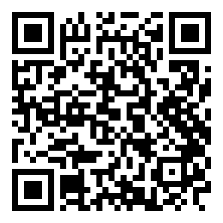

오늘 뭐 먹지?
말로 관리하는 우리 집 냉장고

설치하는 법
- 위 버튼을 눌러 APK를 받습니다.
- 알림이나 다운로드 폴더에서 받은 파일을 엽니다.
- “출처를 알 수 없는 앱” 안내가 나오면 이 출처 허용을 켜고 설치합니다.
- 앱을 열고 로그인 없이 둘러보기 → 허용하고 시작하기로 마이크를 허용합니다.
마이크를 허용해야 “헤이 키친”으로 부를 수 있습니다. 건너뛰면 화면 조작만 됩니다.
무엇을 해볼 수 있나요
- “헤이 키친” → “계란 열 개 넣었어, 유통기한은 10월 5일까지야”
- 냉장고 탭에서 기한이 급한 재료를 확인합니다.
- “헤이 키친” → “삼겹살로 뭐 해먹을까?” 로 메뉴를 받습니다.
- 메뉴를 고르고 인분을 바꾸면 필요한 재료 양이 다시 계산됩니다.
서버
- 상태
확인 중…- 주소
today-meal-api-production.up.railway.app